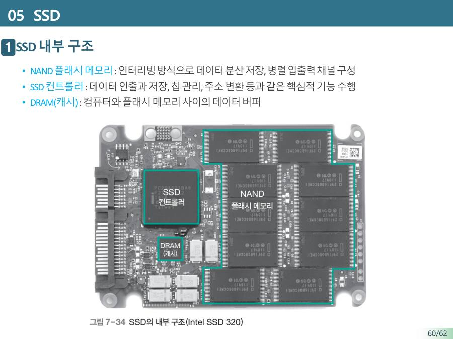

SSD — 움직이는 부품이 없는 저장장치 ★★★
SSD(Solid State Drive)는 기계 부품이 있는 HDD를 대신하려고 만든 대용량 비휘발성 반도체 저장장치예요. 안에는 NAND 플래시 메모리(저장 밀도가 높은 반도체)가 여러 개 배열돼 있어요. 판도 팔도 모터도 없고 전기 신호만 쓰니까 빠르고 조용하고 안정적이에요. 대신 같은 용량당 가격은 HDD보다 다소 높아요.

| SSD 내부 부품 | 하는 일 |
|---|---|
| NAND 플래시 메모리 | 데이터를 실제로 저장해요. 여러 개에 나눠 저장(인터리빙)하고 병렬로 입출력해서 빨라요 |
| SSD 컨트롤러 | 데이터를 꺼내고 저장하고, 칩을 관리하고, 주소를 변환하는 두뇌예요 |
| DRAM (캐시) | 컴퓨터와 플래시 사이에서 데이터를 임시로 담는 버퍼예요 |
SSD 저장 공간은 페이지와 블록으로 이루어져요. 페이지는 데이터를 저장하는 최소 단위(읽기와 쓰기의 기본)이고, 블록은 지우기의 최소 단위예요. 페이지 여러 개가 모여 블록 하나가 돼요. HDD와 비교하면 SSD의 블록은 트랙, 페이지는 섹터와 비슷해요. 즉 HDD의 저장 최소 단위는 섹터이고, SSD의 저장 최소 단위는 페이지예요.
| HDD | SSD | |
|---|---|---|
| 원리 | 자기 + 기계 회전 | 반도체 플래시 (전기) |
| 속도 | 느림 (5~20ms) | 빠름 (20~200µs) |
| 같은 용량 가격 | 저렴 | 비쌈 |
| 최대 용량(교수님 설명) | 약 20TB | 약 8TB |
| 소음·충격 | 모터 소리, 충격에 약함 | 조용, 안정적 |
| 비휘발성 | O | O |
| 최소 단위 | 섹터 | 페이지 (지우기는 블록) |
"둘 중 무엇을 살까?"는 계층 구조로 풀어요. SSD와 HDD 사이에도 빠르고 비싼 쪽 / 느리고 싼 쪽의 관계가 있어서, 자주 쓰는 운영체제와 프로그램은 SSD에, 자주 안 쓰는 동영상·사진은 HDD에 두면 효율적이에요.
"SSD = 빠르고 비싸다, HDD = 느리고 싸다". 그래서 OS와 프로그램은 SSD, 동영상·사진은 HDD예요. 기출 Q10 빈칸 10.6~10.9가 이 문장 그대로예요.
SSD는 NAND 플래시 메모리로 구성된 비휘발성 반도체 저장장치로 기계적 구동부가 없어 HDD보다 읽기/쓰기 속도가 빠르지만 동일한 용량 대비 가격이 비싸다. 따라서 운영체제 등 자주 사용하는 프로그램과 데이터는 SSD에, 동영상·사진 등 자주 사용하지 않는 데이터는 HDD에 보관하면 효율적이다. SSD에서 읽기/쓰기의 최소 단위는 페이지, 지우기의 최소 단위는 블록이다.
잠깐 확인 — SSD에서 "지우기"의 최소 단위는 페이지와 블록 중 무엇인가요?
블록이에요. 페이지는 읽기와 쓰기의 최소 단위예요.
화면을 가리고 "SSD — 움직이는 부품이 없는 저장장치 ★★★"을(를) 친구에게 설명하듯 한 문장으로 말해 보세요. 막히면 위의 빨간 칸만 다시 보고 넘어가요.
자료: 7주차 · 07보조기억장치.pdf(28쪽~) · 빅데이터플07(7주차)